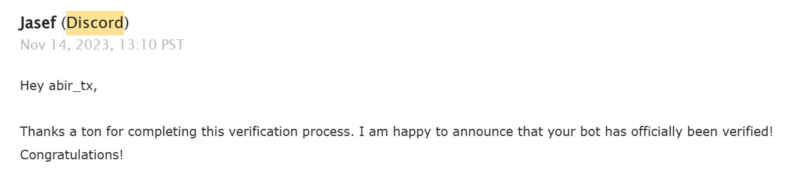

This page contains the latest announcements and the bot development changelogs from the AIUB Discobot developer Mushfiqur Rahman Abir. This is the official changelog maintaining site for AIUB Discobot. The page will only contain updates and announcements about the discobot not about the website or any other things. The updates will be posted here as soon as they are released. The page will be updated regularly with the latest updates and announcements. So, keep an eye on this page to get the latest updates and announcements about the AIUB Discobot.
Major release cycle - V3.0.0 is now live. The update includes API changes, new features, and bug fixes. Also note that this update is mostly for developers as it changes backend technologies a lot.
This is a major release of AIUB Discobot. The update includes major architecture changes along with new features & bug fixes.
Also, a dedicated landing page for the bot is available now: AIUB Discobot Website.
This is an optimization release. There have been a lot of changes behind the scenes to the bot in this release. I have tried to fix the same notice auto posting. The release is mainly for developers.
!botversion command available (This
is mainly for developers)A new dedicated landing page for the bot will be published soon.
An update to AIUB-DISCOBOT has been given & is live now. The bot is now on version 1.1.0 with some new changes. Please do invite more AIUBans to this server so that these update notices get reached to them too. I am always working on making the bot stable and more useful for you all. Thank you for your support.
AIUB Discobot is now officially listed on the Discord app directory. The bot is now available in the Discord bot list. You can search for the bot right from the discord app and start using it. Here is the link to the bot in the discord app directory.
AIUB Discobot is now officially verified by Discord. The bot is now available in the Discord bot list. The bot can now be used in more than 100 servers.
The Official Mail Snap
